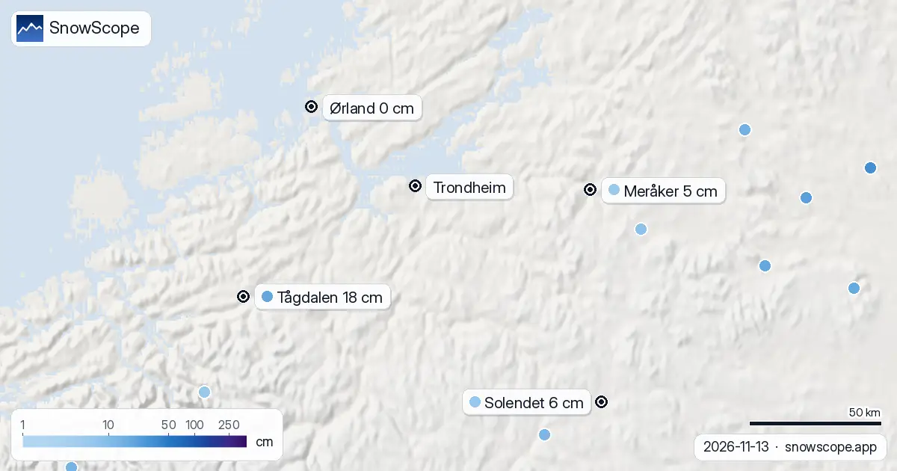

Hund i Bymarka i helgen: vått, mildt, og hvor båndet sitter på hele året (14. november 2026)
Denne helgen vil ikke bringe snø til Trondheims lavlander. Byen og dens kystestasjon ved Ørland registrerte ingen snø 13. november; nærmeste snødekning ligger innlands—5 cm på Meråker og 18 cm på Tågdalen. Lørdag kan se spor av vått snø, men med temperaturer rundt 5 °C, ingenting vil feste seg på lavsiden.
Se snøprognosen for Trondheim direkte i SnowScope-appenSnødybde, puddervarsler og 3D-kartet, gratis.
Der vinteren allerede har kommet
Dra østover eller innlands fra Trondheim og bildet endrer seg fort. Meråker, 67 km unna i Stjørdalsdalen, holder 5 cm snø. Dra ytterligere 11 km høyere til Tågdalen på 415 m og du finner 18 cm—et brukbart underlag som skigåere og fotgjengere kan stole på. Storlien, like over den svenske grensen på 583 m, målte 8 cm. Røros, høybyen 108 km sørøst på 630 m høyde, lå på 11 cm. Dette er mønsteret i tidlig november i Trøndelag: høyde og avstand innlands bestemmer hvor vinteren slår seg ned.
Historisk sett ser Trondheims kystzone snø bare halvparten av gangene rundt midten av november. Middelverdien er rundt 2 cm. I fjor lå 1 cm på bakken på denne datoen; året før var bakken bar. Innlandsfjellene har bygget dekning mye raskere i år—Tågdalens 18 cm er godt over det typiske bildet for november.

Helgværet: regn, ikke snø
Fredag ettermiddag bringer spor av vått snø, opp til 1 cm, men vente lite til å overleve på lavsiden ettersom temperaturer når 2 °C. Lørdag og søndag går over til regn, mild luft på 2 til 5 °C, og ingen nysnø. Kysten blir våt. Innlands vil den eksisterende snødekningen krympe sakte, men bør holde seg på høyere høyder.
Fredag ettermiddag bringer spor av vått snø, opp til 1 cm, men vente lite til å overleve på lavsiden ettersom temperaturer når 2 °C. Lørdag og søndag går over til regn, mild luft på 2 til 5 °C, og ingen nysnø. Kysten blir våt. Innlands vil den eksisterende snødekningen krympe sakte, men bør holde seg på høyere høyder.
Bymarka denne helgen: skogtur på vått underlag
Bymarka, de bølgende fjellene og skogen umiddelbart sørvest for byen, stiger til rundt 400 m og tilbyr ditt nærmeste snøkans uten å forlate byregionen. Allikevel, vente vått grus og gjørme på de lavere stiene denne helgen. Kommunen holder fem hovedstier pleiet og grittet om vinteren: Lian til Fjellseter (4 km); en 7 km rundtur fra Diket parkeringsplass ved Vådan via Skjelbreia og Stykket; Nilsbyen til Granåsen ved Vådan og Frøset (4 km); Smistad til Rønningen (3 km); og Ringvål til Vellikvatnet (2 km). Høyere stier i Bymarka holder mer snø enn lavere.
År-rundt båndregler i og rundt Bymarka
Trondheims generelle hundeforskrift—hunder må være på bånd fra 1. april til 20. august—er ikke i kraft nå. Men båndregler gjelder året rundt i byen. Disse dekker bolig- og handelsområder, parker, gravplasser, arealer innen 50 m fra skoler og barnehager, innen 50 m fra Jonsvatnet-stranden og dens is, og Nidelva-korridoren.
I Bymarka selv krever fire hovedruter bånd til enhver tid: fra Bekken gård parkeringsplass til Estenstadhytta; fra Henriksåsen til Elgsethytta; fra Fjellseter til Grønnlia; og fra Smistad til Rønningen. Parkeringsplasser og servicesteder i skogen er også bånd-soner. Sjekk disse før du går.
Hva du skal pakke til mildt, vått vær
Regnjakker og god grep på støvlene betyr mer enn vinterlag denne helgen. Hvis du klatrer til høyere deler av Bymarka, er luften kjøligere og snøflekker kan dukke opp, så ta med et ekstra lag. Reflekterende utstyr er essensielt på mørke ettermiddager—våte stier gjør foringen usikker for både hund og fotgjenger.
Tips til skiløpere
- Kjør innlands eller sørvest for å finne ekte snø. Meråker (1 time østover) eller Røros (2 timer sørover) vil belønne kjøreturen; Bymarkas høyere stier holder mer snø enn lavere.
- Ha båndet klart ved parkeringsplassen. År-rundt bånd-soner starter rett ved stien oppene i Bymarka.
- De høyere delene av Bymarka—over 400 m—tilbyr det beste sjansen for en tur på snødekket denne helgen.
- Vått grus på pløyde stier: bruk gode støvler og ta med refleksvest for både deg og hunden på mørke ettermiddager.
- Før 20. august neste vår, husk at den strenge båndregelen vender tilbake over hele kommunen.
Om tallene
Snødybdene for skistedene er det dypeste snødekket i de øvre bakkene på datoen som vises; de er anslag for et område, ikke en måling i ett punkt. Prognoser kan endre seg. Les alltid det offisielle snøskredvarselet før du kjører utenfor preparert løype.
Siter denne rapporten
For forskning, undervisning eller presse: tallene og diagrammene kan brukes fritt under CC BY 4.0 med denne kildehenvisningen.
SnowScope (2026), Hund i Bymarka i helgen: vått, mildt, og hvor båndet sitter på hele året (14. november 2026), https://snowscope.app/blog/nb/2026/11/trondheim-dog-snow-weekend-14-november-2026.html, hentet 2026-11-14
SnowScope (Atlas Labs). (2026, November 14). Hund i Bymarka i helgen: vått, mildt, og hvor båndet sitter på hele året (14. november 2026). SnowScope snow reports. https://snowscope.app/blog/nb/2026/11/trondheim-dog-snow-weekend-14-november-2026.html
BibTeX
@misc{snowscope2026trondheimdogsnowweekend1,
author = {{SnowScope (Atlas Labs)}},
title = {Hund i Bymarka i helgen: vått, mildt, og hvor båndet sitter på hele året (14. november 2026)},
year = {2026},
month = nov,
howpublished = {\url{https://snowscope.app/blog/nb/2026/11/trondheim-dog-snow-weekend-14-november-2026.html}},
note = {Published 2026-11-14 13:29 UTC; accessed 2026-11-14}
}· CC BY 4.0 · Metoder, data og verktøy →
Følg Trondheim
Gratis: en melding når nysnø er på vei, og prognosen hver morgen.